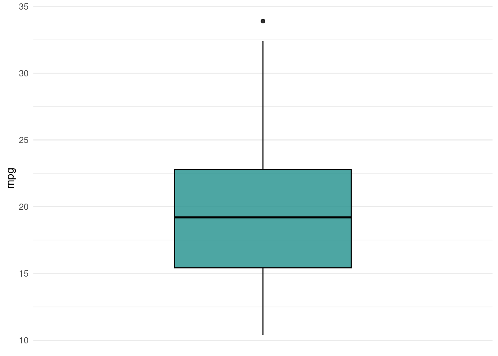

<TaskRegr:mtcars> (32 x 11): Motor Trends
* Target: mpg
* Properties: -
* Features (10):
- dbl (10): am, carb, cyl, disp, drat, gear, hp, qsec, vs, wt mpg am carb cyl disp drat gear hp qsec vs wt
1: 21.0 1 4 6 160 3.90 4 110 16.46 0 2.620
2: 21.0 1 4 6 160 3.90 4 110 17.02 0 2.875
3: 22.8 1 1 4 108 3.85 4 93 18.61 1 2.320
4: 21.4 0 1 6 258 3.08 3 110 19.44 1 3.215
5: 18.7 0 2 8 360 3.15 3 175 17.02 0 3.440
6: 18.1 0 1 6 225 2.76 3 105 20.22 1 3.460